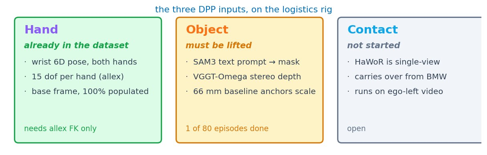
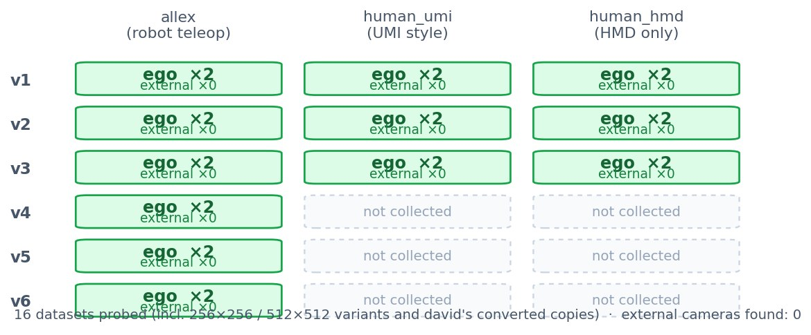
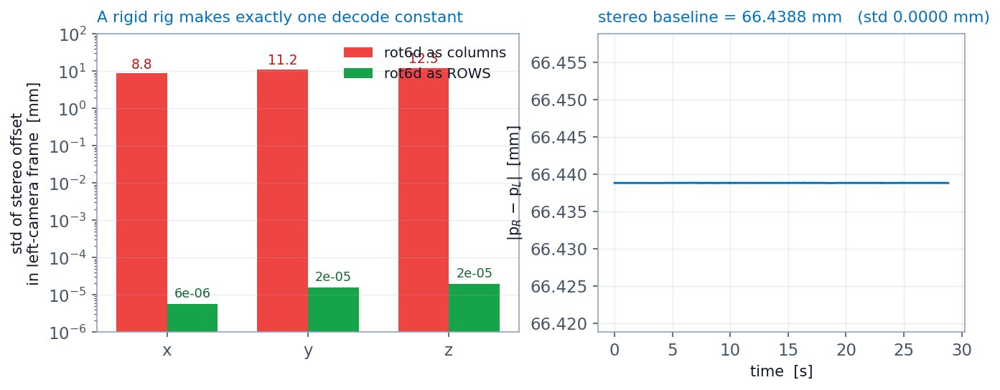
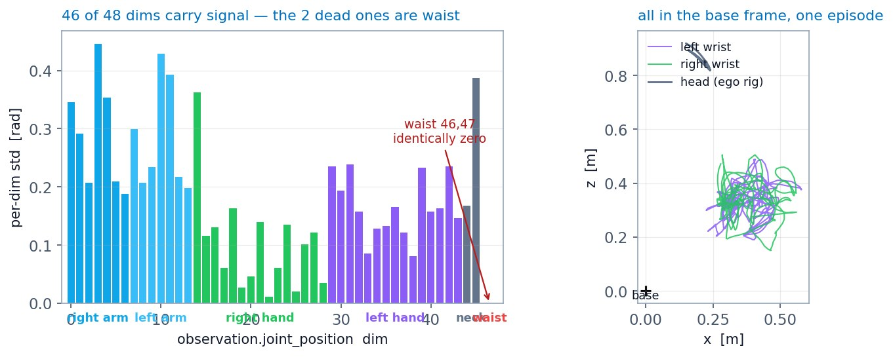

Frontier Demo (logistics): what the ego-stereo rig actually provides
BMW & Frontier Demo · logistics onboarding · rig audit and frame convention
Lab meeting
2026. 09. 01
Presented by beomjun
Overview
[TL;DR] No external view; hand pose and world frame already provided.
- Done: 16 datasets probed, ego-stereo only
- Done: frame convention pinned from data
- Discuss: object mesh · batch size · URDF

head grey · left wrist purple · right wrist green · v3/human_hmd_new · probe + viz: ~/claude-code-rc/DPP-BMW/
Method (1): Rig inventory across v1–v6
Every version and column carries exactly two ego cameras.
- One metadata read per dataset
- allex teleop also ego-stereo only
- Resolution variants rescale, same streams

source: each dataset's meta/info.json · one batched read-only ssh · paths listed in the appendix
Method (2): Frame convention from the rigid baseline
The rigid stereo offset selects the correct rot6d decode.
- rot6d = first two rows
- Offset constant in left frame
- Column decode rejected, rows accepted

every [9] key is [pos3, rot6d] · test applies RT to the left→right offset · viz/hmd_frames_viz.py
Results
- Base frame is static and usable
- head + both wrists, base frame, full episode
- identical start pose across episodes, no reset
- 3D structure at a frozen timestep
- Hand pose already in the dataset
head grey · left wrist purple · right wrist green · ep0_episode.mp4 · ep2_episode.mp4 · produced by viz/hmd_frames_viz.py
Results
- Base frame is static and usable
- 3D structure at a frozen timestep
- view orbits a single mid-episode frame
- wrist triads show orientation, not only position
- Hand pose already in the dataset
triad axes = the frame's own x/y/z · ep0_turntable.mp4 · ep1_turntable.mp4
Results
- Base frame is static and usable
- 3D structure at a frozen timestep
- Hand pose already in the dataset
- wrist 6D pose plus per-hand joints, both hands
- only the two waist dims are identically zero

blocks per meta/modality.json · these are allex joints retargeted from the human, not MANO keypoints
Discussion & Action items
Three decisions; silence means the recommendation stands.
Discussion:
- Object mesh from partial views — temporal accumulation vs cuboid fit vs BundleSDF → accumulation for points, cuboid for contact (owner)
- Extraction batch size — pilot 5 vs full 20 episodes → 20, one array job, sign-off before submit (owner)
- Hand points — allex FK vs MANO re-estimation → FK, blocked on the URDF path (owner)
Action items:
- Confirm the preflight clips read correctly (owner · today)
- allex URDF path for hand FK (owner · blocking)
- Object + hand extraction, 20 episodes (agent · after go)
- 20-demo gallery deck (agent · after extraction)
Appendix · evidence paths · references · cut list
- Probed
- /rlwrld2/home/aaron_jeong/frontier_demo/{v1…v6}/{allex,human_umi,human_hmd_new}/… · /rlwrld2/home/david/lerobot_data_convert/… · /rlwrld2/home/david/frontier_demo_cumul/v1_v2
- Probe data
- ~/claude-code-rc/DPP-BMW/data-probe/v3_human_hmd_new/ (meta + eps 0–2)
- Scripts
- ~/claude-code-rc/DPP-BMW/viz/hmd_frames_viz.py · viz/deck_figs.py
- Prior demo
- /virtual_lab/sjw_alinlab/beomjun/hmd_object_demo/ (SAM3 + VGGT, ep0 only)
- SAM3.1 text-prompt segmentation · VGGT-Omega self-calibrating stereo depth
- BundleSDF — model-free simultaneous 6D tracking and reconstruction
- BMW counterpart records: base + augmentation · left-hand refix · CHORD
Cut list (dropped from this deck): BMW eval/rollout of the 7 base policies · action item #5 old-batch hand-bug check · CHORD 20 of 60 failed runs · ready-pose anchor ruling · project rename to BMW & Frontier Demo · UMI column not yet examined for hand labels · 37% object-mask coverage on the ep0 demo
rig facts verified 2026-08-31 / 2026-09-01 · memory: logistics-frontier-demo-rig.md